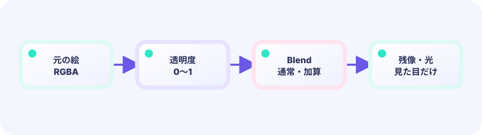

通常合成
手前の絵が奥を隠します。
BlendSourceOver
★★★☆☆ / PLAYABLE
ふつうの合成は「手前が奥を隠す」。加算合成 BlendLighter は「色を足す」。だから光が重なるほど明るくなり、真ん中は白く輝きます。炎も魔法もここから。
はじめて読む人へ
加算合成は、すでにある光へ次の光の明るさを足す描き方。ebiten.BlendLighterは『重なった色を明るい方へ足す』設定です。赤い光と緑の光は重なると黄色へ近づきます。前の透明度・重ね順・残像の描き方へ光らせ方を追加します。 Go用語メモ：整数型（int）は小数を持たない数、浮動小数点型（float32/float64）は小数を持てる数、typeはデータの箱の種類を決める言葉、funcは処理をひとまとめにする関数の印です。[]TはTを順番に並べるリスト、appendはその末尾へ一つ足す命令です。Updateは数字と状態を進め、Drawはその結果を絵にします。
このページの1本
説明と次のコードを対応させてから、ゲームで変化を確かめよう。
op.Blend = ebiten.BlendLighter加算を計算する
加算合成は光の色を足す方法です。赤(1,0,0)+緑(0,1,0)=(1,1,0)で黄色。赤・緑・青を足すと(1,1,1)で白になります。
赤 + 緑 = (1,0,0) + (0,1,0)
= (1,1,0) = 黄色
赤 + 緑 + 青 = 白このコースも LEVEL 01 の Update（数字）→ Draw（絵） のくり返しの上にあります。ここでは Draw の“描き方”を一段深く扱います。

PLAYABLE / LIVE GO + マウス
2つの光を重ね、通常合成と加算合成を切り替えます。加算にすると、重なった所だけ明るく輝きます。
DEEP DIVE / ADDITIVE
現実の光と同じで、光は足し算です。赤い光と緑の光が重なれば黄色、さらに青が乗れば白。op.Blend = ebiten.BlendLighter にすると、Ebitengine が色を上に足していきます。
手前の絵が奥を隠します。
BlendSourceOver
色を足して明るくします。
BlendLighter
中心が濃い丸を重ねます。
glow ×N
TRY IT / BLEND
2つの光を重ね、通常合成と加算合成を切り替えます。加算にすると、重なった所だけ明るく輝きます。
IN THE REAL GAME
色を付けた丸を BlendLighter で何枚も描くと、炎の芯のように輝きます。
op := &ebiten.DrawImageOptions{}
op.ColorScale.ScaleWithColor(lightColor)
op.Blend = ebiten.BlendLighter // 光を足し算する
screen.DrawImage(glow, op)WHY ADD?
重なるほど白へ近づき、エネルギーの塊に見えます。
WHY DARK BG?
加算は暗い所ほど目立ちます。夜空や宇宙と相性抜群。
TRY NEXT
細い線を加算で重ね描きして、光る輪郭を作ろう。
FEEDBACK